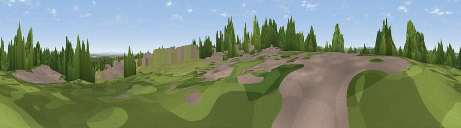

Harlow Hill
#20489 in England · top 31% of its area beats it · near HarrogateThe view, rendered

A 360° render of this exact spot computed from the terrain model, tree cover and land cover — summer colours, afternoon light, calibrated against photographs of famous viewpoints. Real trees, hedges and buildings will differ in detail.
The panorama
Grey silhouette: terrain skyline in each direction (720 bearings, Earth curvature and refraction included). Dashed green: skyline with trees (+15 m) and buildings (+8 m) as obstacles. Blue strip: how far the ground is visible on each bearing.
Where the view opens
Wedge length = distance to the farthest visible ground on that bearing (vegetation-aware). Rings at 10, 25 and 50 km.
What fills the view
39% grassland · 29% built-up · 22% woodland · 10% cropland
Angular shares of the visible panorama (visual magnitude), not map area. Landscape diversity 0.56 (0–1 Shannon).
Key numbers
More beautiful places nearby
The staircase of upgrades: each row has a higher view potential than everything closer. Driving times are estimates from straight-line distance, calibrated against real road routing — check an actual route before setting out.
| Place | Direction | Drive | Score |
|---|---|---|---|
| Viewpoint near Hampsthwaite | NW · 4 km | ~9 min | 54.2 |
| Viewpoint near Braythorn | SW · 4 km | ~10 min | 54.7 |
| Viewpoint near Pannal | SSE · 4 km | ~10 min | 57.1 |
| Walton Head Whin | SSE · 5 km | ~10 min | 60.5 |
| Viewpoint near North Rigton | SSW · 6 km | ~12 min | 66.6 |
| Viewpoint near Timble | WSW · 8 km | ~17 min | 68.1 |
| Viewpoint near Timble | WSW · 9 km | ~18 min | 68.3 |
| How Hill | N · 13 km | ~24 min | 72.9 |
53.98301, -1.56211 · source: osm peak · position refined by local search. Computed location — check access rights before visiting.